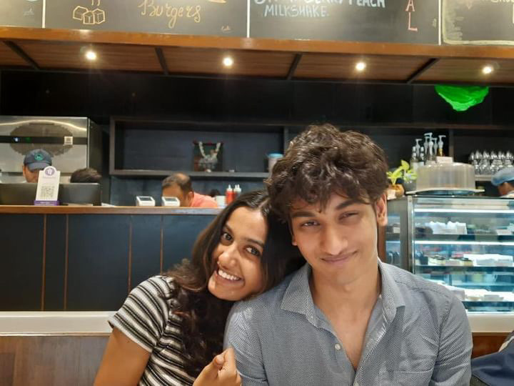

our first actual cute cute picture , never ever wouldve guessed how many more we'd take

absolutely adorable smile , so so so so perfect and so eeeeeeeeeeeeeeee i love it

choking my ass ong
i like sleeping with you acc, makes me feel very nice and warm and wholesome
the shock u had on your face from this one little peck on your cheek hahaha

like aru said "bro looks like he wants to eat" , and aru was correct
our first date date haha , the pasta and the crepes were gooood
hehehe my fav fav picture ,the first flowers i ever got you
not really an us picture but couldnt not add , my fav racer girlie
this and the first time are so etched into my memory and what will always make me want to get you more and more and more flowers
not a speacial picture per se, but our first pictures after well "us"
weve looked at sm pictures of how it is now lets look at where it all began